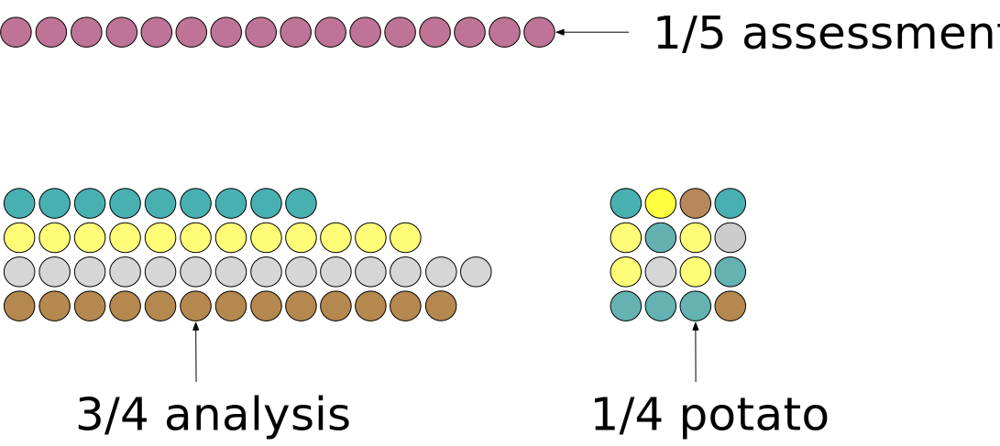

Data Usage with Postprocessing
Introduction
This document is used to discuss and test ideas for how have can estimate and evaluate machine learning models that have three potential components:
- Preprocessors are sequential operations that prepare predictor data for use in a supervised model. Examples are centering/scaling, PCA feature extraction, and so on.
- A supervised ML model to translate the predictors to predictions of the outcome (e.g., logistic regression, random forest, etc.).
- Postprocessors that take the model’s predictions and change them for the purpose of improving model performance. One example is choosing an alternate probability cutoff in binary classification to optimize for better true positive or true negative rates.
We’ll call the combination of these three components the model pipeline (taking after python’s sci-kit learn object type):
pipeline = preprocessor(s) + supervised model + postprocessor(s)The pipeline includes the model in the least; the pre and post model operations are added as needed.
More About Postprocessors
The process of postprocessing the predicted values has not been thoroughly discussed, mostly because the software to operationalize the full pipeline process is not comprehensive.
The number of potential postprocessors is probably in single digits. Some examples:
- Specifying an optimal probability cutoff (mentioned above).
- Restricting the range of possible predictions (e.g., greater than zero).
- Simple deterministic transformations (e.g., exponentiation of predicted values).
- Disqualifying predictions via an equivocal zone.
- Post-hoc nearest neighbor adjustments such as Quinlan (1993).
- Calibration.
Each of these steps can involve tuning parameters that require optimization. For example, we can vary the cutoff value over a range for alternate probability cutoffs and measure the performance change in some statistic that uses the hard class predictions (such as accuracy or Kappa). These types of parameters are estimated indirectly via gris search or some other tuning parameter optimization routine. There is no analytical formula where we plug in our predictor and outcome data to produce a point estimate to plug into the postprocessor.
However, the last two in the list above might also have parameter values that require direct estimation (akin to slope parameters in a linear regression). Of these, let’s focus on model calibration for more discussion.
Model Calibration
This article focuses largely on model calibration. This technique is not particularly significant, but we use it because it is a well-known postprocessing technique that requires direct parameter estimation.
Calibration is most often applied to classification models. To keep things relatively simple, we’ll demonstrate the problem with a regression model that predicts a numeric outcome.
We’ll use a regression data set as a demonstration1. The data were split into a training set (n = 6004), a validation set (n = 2004), and a test set (n = 2004). This data splitting scheme corresponds to Case 5 below. The outcome is numeric and there are 30 predictors.
Let’s deliberately fit a regression model that has poor predicted values: a boosted tree with only five members. The validation set statistics show an RMSE of 4.71 (units are minutes) and a corresponding R2 of 85.4%. It’s hard to know if the RMSE is acceptable without context but the latter statistic seems pretty good.
However, when we look at the data, the observed and predicted values are well correlated but very poorly calibrated:
The predicted values are not realistic in the sense that they are not consistent with the original data. They should fall along the diagonal green line if the model is performing well.
The solid blue curve above shows a linear regression line that is fit to these data. This measures the systematic miscalibration. If we were to use the validation set to quantify the pattern, the intercept was -39.2 minutes and the slope was 2.49 minutes. Now that we know this pattern, it might be possible to remove it from the predictions.
The problem, more broadly described below in Case 3, is that we can’t use the validation set to measure this pattern and assess its effectiveness.
As an alternative, we used a slightly risky approach described in Case 3 to estimate a slope of -38.7 minutes, and the slope was 2.48 minutes. When these values are used to correct the validation set predictions, RMSE decreases from 4.71 to 2.68 minutes. The R2 stays the same.
The plot of the calibrated predictions shows a moderately effective model that has much better calibration:

Our Goals Here
In this article, we want to examine the nuances of data usage in situations where our pipeline is trained in two stages. To do this, we’ll show some diagrams that illustrate some different strategies. The discussion of different data spending schemes with an initial pool of 100 samples, assumed to be in a random order, is visualized using:

Let’s start with the ordinary case where we use a simple two-way training/testing split of the data, then consider different analysis paths.
Initial Two-Way Split
There are a few different scenarios to consider. The first two are very pedestrian and are only included to contrast with the more complex ones.
Case 1: No Tuning, No Postprocessing Estimation
This is a simple case where a basic model will suffice with tuning parameters and no uncertainty about what predictors should be in the model.
“No Postprocessing Estimation” means that there might be a postprocessor but it does not require any parameter estimation. For example, it might just change the probability cutoff for a binary classification to be something other than 50%.
We split the data into a larger set (training, in orange), and the remainder goes into testing (purple). Any 80/20 split is used to demonstrate:

All of our estimation tasks use the training set and the test set is evaluated only once to quantify the efficacy of the model.
Case 2: Tuning, No Postprocessing Estimation
Here, some aspects of the model, preprocessor, or postprocessor required optimization. Any postprocessor does not require estimation (but could require tuning).
Using the same initial split from Case 1, we might use some resampling strategy like cross-validation, the bootstrap, or a time-series resampling scheme. Without loss of generalization, we’ll show a 5-fold cross-validation diagram:

As usual, we fit five model pipelines with different tuning parameter candidates. Each model uses 4/5 of the data for estimation and the remaining 1/5 to measure performance. The resulting five performance statistics are averaged into a single value, which is used to guide the user in picking which tuning parameters are optimal (or at least reasonable).
Once the optimization phase is finished, the final model uses the optimized tuning parameter values and is fit to the 80 data points of the training set. The other 20 samples in the test set are used to verify performance.
Note that tidymodels uses specific terminology to distinguish between the data used for modeling and evaluation at the two different levels of data partitioning. The initial split creates training and test sets. During resampling, the analogs to these data sets are called the analysis and assessment sets.
Case 3: No Tuning, Postprocessing Estimation
Here our model pipeline requires no tuning but we do need to estimate parameters for our postprocessor.
For example, perhaps our ordinary least squares linear regression model has some systematic bias in the predictions (and we have to use this model). We could attach a linear calibrator to the model pipeline that estimates the slope and intercept of a line defined by the observed and predicted outcomes (as shown above).
We need data to estimate the slope and intercept. We should not touch the test set. Naively re-predicting the training set is a poor choice; for many black-box models, the fitted values will be unreasonably close to the true values. This means that the systematic bias that we are trying to remove will be less pronounced and the calibration may not help. It also leaves us with no other data to judge how well the model (and calibration) works without using the test set.
One possible approach is to resample the model (prior to the calibration set) using the approach in Case 2. This can produce the out-of-sample predictions that were used to produce the resampled performance statistic. These values are not overfit to the training data and should be a reasonable substrate to fit the calibration model. The main downside to this approach is that we are “double dipping” on the training set but using it to
- Estimate our model parameters, and
- Estimate the calibration parameters.
This raises the risk of overfitting and we don’t have a data set to check how well this works until the test set (which should be used to verify performance). This is the approach that was used in the regression calibration example above.
One approach is to use a three-way split at the start instead of a basic training/test set. We could reserve some data strictly for calibration (assuming that we know that calibration is required).
We can allocate a small fraction of data for postprocessing estimation. A diagram of this is before with 60% used for training the preprocessor and supervised model, 20% for estimating the postprocessor, and 20% for testing2. In the diagram below, the two shades of brown are meant to reflect that these data are used for estimation and the purple data are used strictly for model evaluation.

The nomenclature is a little bit fuzzy here. For now, we’ll call the darker brown data the training set (no different than before), the purple data the test set, and the light brown data the “potato set”3
This extra set is a simple solution that avoids potential data leakage but is reducing the amount of data used to train the preprocessors and the supervised model.
The next use-case is for situations where the model needs to be resampled for tuning or just to get some estimate of model performance.
Case 4: Tuning, Postprocessing Estimation
Now our model and/or preprocessor have unknown parameters that need to be indirectly optimized via grid search, Bayesian optimization, or by some other means. The compare and choose between models, we require an out-of-sample performance estimate, just as in Case 2.
The difference here is the existence of a postprocessor that needs estimation.
Once we arrive at our final tuning parameter value(s), we still need to perform the “last fit” where we estimate all of the parameters for the entire model pipeline.
Let’s say we use the three-way data splitting scheme shown above in Case 3. How do we resample the model? We suggest taking all data that are not used for the training set as the substrate for resampling. Let’s again use 5-fold cross-validation to demonstrate. The 80 samples are allocated to one of five folds.

For the first iteration of cross-validation, we take out the first fold earmarked for performance estimation as the assessment set.
Ordinarily, the other 4/5 would be used to estimate the preprocessor(s) and the model. However, we definitely need to include the postprocessor’s effect within resampling; otherwise, our resampling performance statistics will have overly optimistic values.
We can emulate the same procedure used in our initial three-way split by randomly4 selecting the same proportion of data to estimate the two estimation stages.
Visually, the scheme for the first iteration of cross-validation is:

In this instance, five preprocessor/model fits are paired with five calibration models, and when combined in sequence, they produce five resampled performance statistics. This is a complete resampling of the process that avoids information leakage.
Initial Three-Way Split
If we have a lot of data, we might choose to start with three partitions of our data pool. The standard training and test sets would be supplemented by a validation set. This serves as a separate group of points that are used to judge model effectiveness during model development. While we should only look at the test set once, the validation set is designed to be evaluated multiple times so that we can compare and/or optimize our pipeline. Here’s a view of a 65/15/20 split:

During model development, we can view the validation set as if it were a single iteration of resampling. Let’s look at that first. We’ll simply the number of use-case here too.
Case 5: No Postprocessing Estimation
During model development, we would train our pipeline on the 65% of the data reserved for that purpose. Assuming that we need to tune or compare models, we would predict the 15% validation set and compute performance statistics.
Eventually, we determine the best model pipeline to finalize. At this point, we already have our model fit since we have been directly training our pipeline on the training set5. From here, we predict the test set and verify that our validation set statistics were accurate.
Case 6: Postprocessing Estimation
The situation here is basically the same as the Case 3; we don’t want to re-use our training set to fit the postprocessor. As with Case 3, we advocate for splitting off a fourth partition of data for that purpose. Here is an example of a 50/15/15/20 split:

During model development,
- The preprocessor and supervised model are training on the training set (50% here)
- The predictions on the potato set (15%) are used as inputs to estimate the postprocessing parameters.
- The completely fitted pipeline predicts the validation set (15%), and those performance statistics guide our decision to finalize the pipeline.
- The test set (20%) is evaluated once for verification of performance.
That is a lot of splitting but our pipeline is pretty complex. One might think that we are significantly reducing the amount of data used to fit the supervised models. That’s correct, and hopefully, it emphasizes that as the complexity of our pipeline increases, our data usage strategy needs to be more extensive to avoid subtle overfitting errors.
Footnotes
These data are originally from
aml4td.org.↩︎Again, we don’t have to do this for all postprocessors, just those that require parameters to be estimated↩︎
Obviously, this is not going to be the real name. We need a placeholder until we come up with something that we all like. Potential candidate names are the “reserved data,” auxiliary data,” and “supplemental data.”↩︎
Most of the time, this will be done via random sampling. For time-series data, we would emulate the same non-random splitting strategy that does not break the correlation structure of the data. Also, if we are bootstrapping, the proportional splits are conducted on the distinct rows of the non-test data to avoid having some replicates of specific rows falling in both partitions of the data.↩︎
Since the validation set is no longer required, some people might pool the training and validation set and fit the finalized pipeline on those data (80% in total in our example). I don’t think that it’s a good idea but it does happen.↩︎